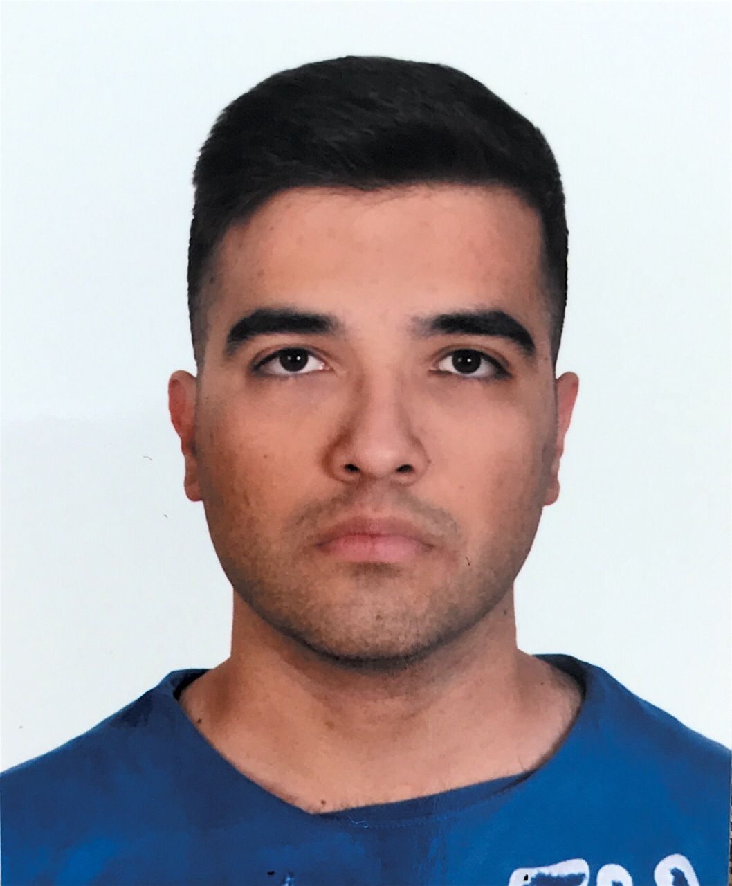

Mehmet Isaac Durmus

Summary
Aspiring Data Analyst currently gaining relevant skills in data analysis while
working as a Case Handler. Eager to leverage strong analytical and customer
service abilities in a dynamic and growth-oriented environment.
Education
- Almus Anatolia High School 2016-2020
- Anadolu University - Bacholer's Degree at Management Information Systems 2020-Present
Work Experience
- Remed Assistance - Case Handler July 2024 - Present
- Starbucks - Barista September 2023 - May 2024
Skills
- HTML
- CSS
- Javascript
- Python
- Microsoft CRM
- Microsoft Excel
- Microsoft Office
Languages
- Turkish Native
- English Flurent
- German A2
- Swedish A2
Contact
- E-Mail mehmetdrms666@gmail.com
- Phone +90 544 202 5015